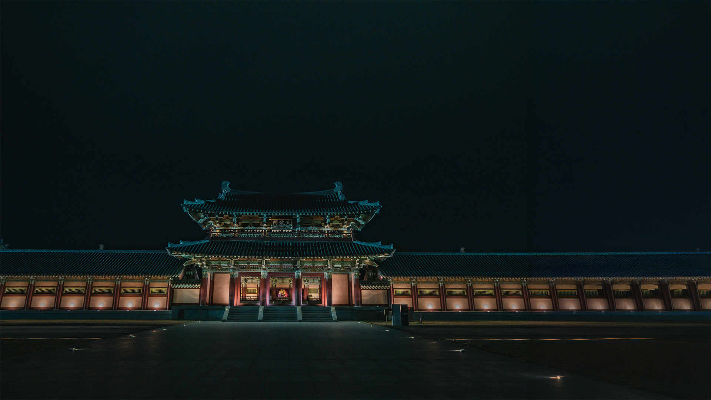
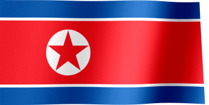

대한민국 ?
대한민국은 자유민주주의 체제로서 자유주의와 민주주의가 결합한 모습을 드러내며, 대통령 중심의 다당제 체제로서의 특징이 존재한다. 3.1 운동을 계기로 1919년 4월 11일 선포된 대한민국 임시정부의 법통을 계승하여 1948년 8월 15일 자본주의와 자유민주주의를 기반으로 하는 대한민국 정부가 수립되었다.
대한민국 이름 유래?
! 대한민국(大韓民國)이란 국호 중 ‘한’ 또는 ‘대한’(大韓)의 어원은 삼국시대 때 유래하였다. 고구려, 백제, 신라를 통틀어서 삼한이라 칭했는데, 그 삼한이 통일되었다는 의미에서 대한이라 한다. 삼국 시대 사람들은 한반도의 세 나라를 삼한이라 불렀고, 이것이 후대에 이어져서 삼한을 ‘삼국’이라 부르고 삼한일통의 하나의 '한(韓)'으로 자리잡았다. 즉 ‘한(韓)’의 나라라는 뜻이다.
대한민국 지형?
한반도?
.한반도는 동아시아에 위치한 반도로, 북쪽으로는 중국과 러시아, 남쪽으로는 동해와 서해로 둘러싸여 있습니다.
현재 한반도는 남북으로 분단되어 있으며, 남쪽에는 대한민국, 북쪽에는 조선민주주의인민공화국(북한)이 있습니다.
대한민국.
한반도는 동아시아에 위치한 반도로, 북쪽으로는 중국과 러시아와 접해 있으며, 남쪽으로는 동해와 서해에 면해 있습니다.
총 면적은 약 22만 km²에 달하며, 다양한 지리적, 문화적 특징을 가지고 있습니다.
태극기(太極旗)
태극기는 흰색 바탕에 가운데 있는 태극 문양과 사방 대각선상에 검은색 선형의 네 괘로 구성된다.
조선 말인 1897년 대한제국이 선포되면서부터 국기로 사용되었다.
"흰 바탕 중앙에 태극도를 그리고 그 주위에 팔괘를 두른다면 조선 8도의 수와 합치되고 있다."
"8괘의 색깔은 완전 흑색으로 하여 드러나게 하고, 태극의 색깔은 반홍반흑으로 하며,
깃발 가장자리에는 홍색선을 두른다면 어떻겠는가."
1882년 4월 11일 당시 마건충과 김홍집이 나눈 필담 내용 중

"태극기는 해방 60년 동안 좌파와 우파, 진보와 보수, 10대와 노년층, 군부독재와 민주화세력 등 계급과 계층을 초월하여 한국현대사를
가로지르는 다양한 이념의 수사로 사용돼오면서 태극기는 하나인데 태극기를 통해 표상하고자하는 바는 서로 달랐다"
한국 , 언어 ?
훈민 정음이란?
백성을 가르치는 바른 소리라는 뜻이다. '훈민정음'이라고 부르는 대상은 두 가지가 있는데, 그 하나는 1443년 음력 12월(양력 1444년 1월)에
세종대왕이 만든 한국어의 표기 체계, 즉 오늘날의 한글을 창제 당시에 부른 이름이고, 또 하나는 1446년 9월에 발간된 책 이름이다.
한글의 위대함?
현재 한글은 ㄱ ㄴ ㄷ ㄹ ㅁ ㅂ ㅅ ㅇ ㅈ ㅊ ㅋ ㅌ ㅍ ㅎ 14개의 닿소리(자음)와 ㅏ ㅑ ㅓ ㅕ ㅗ ㅛ ㅜ ㅠ ㅡ ㅣ 10개의 홀소리(모음)로 구성되어 있다.
한글은 24개의 자음과 모음을 결합하여 매우 많은 말소리를 기록할 수 있다는 점에서 과학적으로 뛰어난 문자로 평가받는다.
또한한글은 읽기와 쓰기가 매우 쉽습니다. 한글의 자모는 소리의 특징을 그대로 나타내기 때문에, 한글을 배우는 데 많은 시간이 걸리지 않습니다.
또 소리의 기본 단위인 음소를 나타내기 때문에, 한글을 읽고 쓰는 데 많은 노력이 필요하지 않습니다.
남북 , 분단
1948년, 한반도에 한국과 조선민주주의인민공화국(북한) 2개 정부가 수립됐다.
한국과 북한은 유엔 에 동시 가입하는 등 국제법상 분단국이지만, 국내법적으로는
하나의 나라라는 이중적 법체제가 이뤄져 있다.
한반도 비무장 지대 (Korean Demilitarized Zone, DMZ)
전쟁이나 분쟁 등으로 휴전 상태에 들어간 상호간의 협약에 의해 군사 활동이 금지된 지역을 말한다. 다른 말로는 중립 지대라고도 부른다.
대표적인 곳으로는 한반도의 DMZ와 남극 등이 있다. 유럽인들에게는 베르사유 조약으로 인해 비무장 지대가 됐던 라인란트가 유명하다.
이산가족 상봉
남북 이산가족 상봉(南北離散家族相逢)은 1945년의 남북분단과 1950년의 6.25 전쟁 이후 남한과 북한에서 따로
떨어져 연락도 안되고 생사조차 알지 못하고 있던 가족 및 친지들이 서로 만나고 소식을 전할 수 있게 한 것을 말한다.
하지만 2020년 이산가족이 고령화되면서 그 수가 줄어들고 있다. 1세대는 직접 헤어진 슬픔을 겪었지만,
2세대는 이산가족 출신임을 인식해도 스스로를 이산가족으로 여기지 않는 경우가 많다.
KOREA
- South Korea
- North Korea
- 민주주의
- 사회주의
- 분단